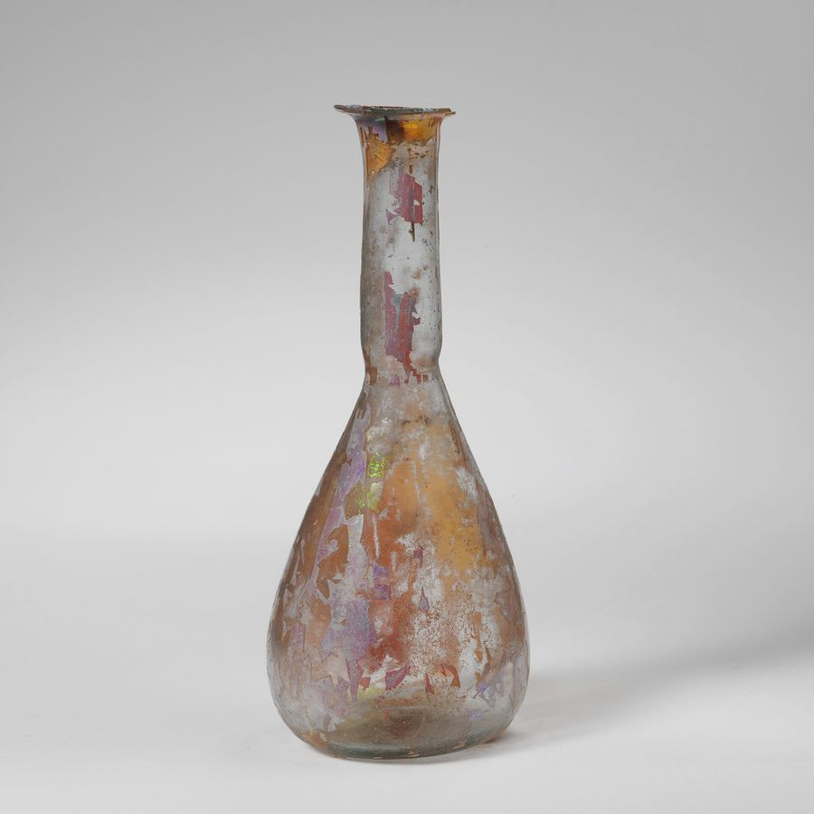

化粧品が書いてよい効能は、番号つきで56個決まっている
化粧品の広告に書いてよい効能は、厚生労働省の通知が番号つきの一覧で示しています。2011年に1項目が加わって、いまは56項目です。一覧の外にあることは、書けません。
もとになった資料
- 資料
- 化粧品の効能の範囲の改正について（平成23年7月21日 薬食発0721第1号）別紙 別表第一
- 写した日
- 立場
- 体づくり・美容の資格も実務経験もない書き手が、原文を写しています
02 / 08 ことばの線引き

写真：Glass perfume bottle MET DP108472.jpg ／ 不明 ／ CC0 （Wikimedia Commons）
{kind=link}
化粧品の箱や広告に並ぶ言い方は、書き手が自由に選んでいるように見えます。けれども実際には、使ってよい効能の言い方があらかじめ決められています。
決めているのは、平成二十三年七月二十一日付けの薬食発0721第1号という通知です。厚生労働省医薬食品局長から各都道府県知事に宛てて出されました。
一覧はどこから来たのか
この通知の本文は短いものです。別表第一に一項を加える、という一文と、加える項目そのものだけが書かれています。
加えられたのが、五十六番の「乾燥による小ジワを目立たなくする。」です。これによって一覧は56項目になりました。
元の一覧は、さらに古い通知にさかのぼります。通知の前書きには、昭和三十六年二月八日付け薬発第44号の別表第一で定め、平成十二年の通知で改正したと書かれています。
一覧は、体の部位ごとにまとまっています。一番から十六番までが頭皮と毛髪、十七番から三十七番までが皮膚、三十八番以降が爪・口唇・歯みがき類です。
たとえば十七番は「（汚れをおとすことにより）皮膚を清浄にする。」、二十二番は「肌荒れを防ぐ。」、三十六番は「日やけを防ぐ。」という書き方になっています。
一覧の中身を、もう少し見てみます。一番は「頭皮、毛髪を清浄にする。」、十一番は「フケ、カユミがとれる。」、十五番は「髪型を整え、保持する。」です。
皮膚の側では、十九番が「肌を整える。」、二十四番が「皮膚にうるおいを与える。」、二十八番が「皮膚の乾燥を防ぐ。」となっています。
三十七番は「日やけによるシミ、ソバカスを防ぐ。」です。防ぐと書かれていて、できたものを薄くする、とは書かれていません。
歯みがき類の項目には、ほとんどに括弧がついています。五十番の「歯を白くする」には「使用時にブラッシングを行う歯みがき類」という限定が付いています。
言い方はどれも短く、そっけないほどです。この短さ自体が、化粧品という区分に与えられている幅の狭さを表しています。
56番だけ、条件がついている
五十六番は、他の五十五項目と扱いが違います。同じ日付で出たもう一本の通知が、この項目を掲げるための条件を定めているためです。
薬食監麻発0721第1号・薬食審査発0721第1号は、製造販売業者に対して効能評価試験を行い、効果を確認することを求めています。
試験は、日本香粧品学会の化粧品機能評価法ガイドラインにある抗シワ製品評価ガイドライン、またはそれと同等以上の適切な試験によるとされています。
試験そのものは外部に委託してもよいとされています。ただし資料の保管と、試験の信頼性および効能に見合うことの判断は、製造販売業者の責任で行うことになっています。
さらに、消費者からの問い合わせに適切に対応できる体制を整えることも求められています。根拠を示すよう求められたときは、資料の概要を提示して説明することとされています。
つまり「乾燥による小ジワを目立たなくする」という言い方は、試験の裏づけがあって初めて置けるものです。他の項目とは重さが違います。
三つの注が、読み方を決めている
一覧の末尾には、注が三つ付いています。どれも短い文ですが、一覧の読み方そのものを決めています。
注一は、たとえば「補い保つ」は「補う」または「保つ」との効能でも可とする、というものです。言い方を短く切ることは認められています。
注二は、「皮膚」と「肌」の使い分けは可とする、というものです。同じ意味の言葉として入れ替えてよい、と読めます。
注三は、括弧の中は効能には含めないが、使用形態から考慮して限定するものである、というものです。歯みがき類や洗顔料といった限定は、ここで効いています。
一覧と注を合わせて読むと、許されているのは言い換えの幅であって、内容の幅ではないことが分かります。範囲の外へは出られません。
医薬品等適正広告基準も、承認を要しない化粧品の効能効果の表現は、この通知に定める範囲をこえてはならないと明記しています。二つの文書は、組みで働いています。
買う側から見ると、この一覧は読む順番の目印になります。一覧の言い方に近いほど、その表示は制度の内側にあると考えられます。
薬食発0721第1号（平成23年7月21日）